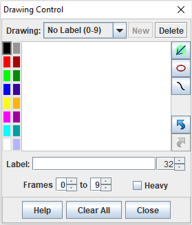
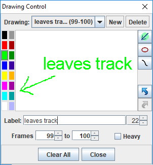

A drawing consists of one or more lines and an optional label that are displayed directly on the video to annotate a tracker experiment.
Click the pencil on the drawing button (near the right end of the toolbar) to open the Drawing Control and enable drawing. When the Drawing Control is open you can draw lines on the video by dragging the mouse (pencil cursor), control the color and other properties of the drawing, and reposition labels by dragging them with the mouse. When done drawing simply close the Drawing Control.

Every drawing has the following properties:


When the Drawing Control is first opened a new blank drawing will be automatically created and displayed as shown in Fig. 1. The drawing is identified by its label and frame range.
Click the New button in the Drawing Control to create additional drawings. Click the Delete button to delete the current drawing or the Clear All button to delete all drawings.
Draw lines by dragging the mouse (pencil cursor) directly on the video, not in the Drawing Control window.
Create a label by entering text into the label field. New labels are positioned in the center of the current view. Drag the label with the mouse (while in drawing mode) to reposition it.
To hide all drawings, click the right side of the drawing button (small arrow) and uncheck the Drawings Visible checkbox. Note that a drawing is visible only when the Drawings Visible checkbox is selected and the current frame number is within the drawing's frame range.
The undo and redo buttons on the right side of the Drawing Control enable you to undo and redo drawing lines, changing text, deleting drawings and clearing all drawings.